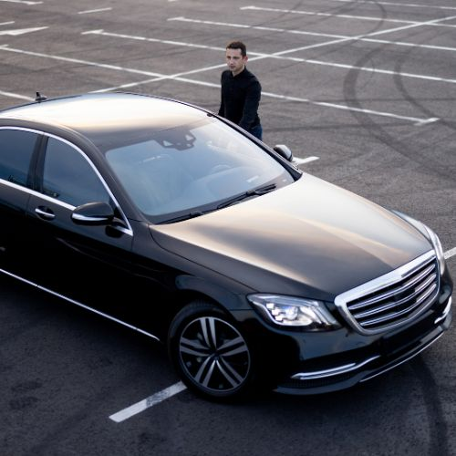

Présentation de nos Véhicules : Confort et Qualité au Cœur de nos Priorités
Dans cette section, nous vous présenterons les différents véhicules que nous mettons à votre disposition pour vos trajets. Chez Excellecar, nous croyons que le confort de nos clients est essentiel pour garantir une expérience de voyage exceptionnelle. C’est pourquoi nous avons décidé de limiter à trois passagers par berline et à six passagers par van.
Cette limitation nous permet de vous offrir un espace optimal, pour que chaque trajet soit agréable et sans compromis sur votre bien-être. Nous nous engageons à fournir un service irréprochable, et ce souci du détail reflète notre engagement à dépasser vos attentes.
